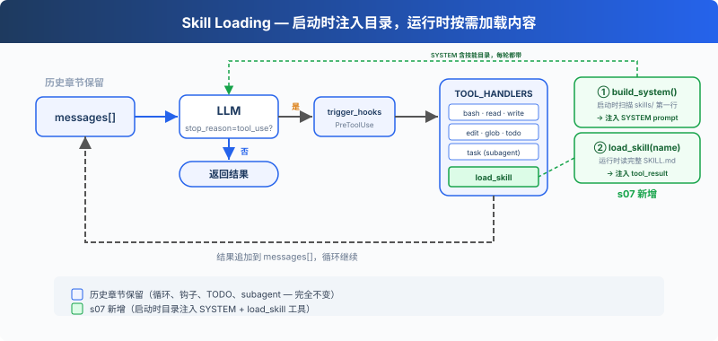

s07: Skill Loading — 用到的时候才加载
"用到时再加载, 别全塞 prompt 里" — 通过 toolresult 注入, 不塞 system prompt。 Harness 层: 知识 — 按需加载, 不堆满上下文。
On this page
s01 → s02 → s03 → s04 → s05 → s06 → s07 → s08 → s09 → ... → s20
"用到时再加载, 别全塞 prompt 里" — 通过 tool_result 注入, 不塞 system prompt。
Harness 层: 知识 — 按需加载, 不堆满上下文。
问题
你的项目有一套 React 组件规范、一份 SQL 风格指南、一份 API 设计文档。你希望 Agent 自动遵守这些规范。最直接的想法，全塞进 system prompt：
SYSTEM = (
f"You are a coding agent. "
+ open("docs/react-style.md").read() # 2000 行
+ open("docs/sql-style.md").read() # 1500 行
+ open("docs/api-design.md").read() # 3000 行
)
6500 行 system prompt。Agent 每次调用 LLM 都带着这些文档——不管是在改 CSS 颜色还是修 SQL 查询。99% 的内容和当前任务无关，白白消耗 token。
解决方案

保留上一章的最小 hook 结构、todo_write 和子 Agent，本章重点转向新增的 load_skill 工具。启动时把技能目录注入 SYSTEM prompt，运行时多注册一个工具加载完整内容，用到才花 token。
两层设计：
| 层 | 位置 | 时机 | 代价 |
|---|---|---|---|
| 1. 目录 | system prompt | 启动时注入（harness 扫描 skills/） | ~100 tokens/skill，每轮都带 |
| 2. 内容 | tool_result | Agent 调用 load_skill 时；SKILL.md 可指引后续的 read_file/bash 调用，用于按需访问额外资源 | ~2000 tokens/skill，按需 |
dispatch 机制不变，load_skill 通过 TOOL_HANDLERS[block.name] 分发。
工作原理
skills/ 目录，每个技能一个子目录，包含 SKILL.md 文件：
skills/
agent-builder/SKILL.md
code-review/SKILL.md
mcp-builder/SKILL.md
pdf/SKILL.md
第一级：启动时注入目录：harness 启动时调用 _scan_skills() 扫描 skills/ 目录，解析每个 SKILL.md 的 YAML frontmatter（name、description），存入 SKILL_REGISTRY 字典。list_skills() 从注册表生成目录，注入 SYSTEM prompt。Agent 每轮都能看到"我有哪些技能可用"，不花额外 API 调用：
SKILL_REGISTRY: dict[str, dict] = {}
def _scan_skills():
if not SKILLS_DIR.exists():
return
for d in sorted(SKILLS_DIR.iterdir()):
if not d.is_dir():
continue
manifest = d / "SKILL.md"
if manifest.exists():
raw = manifest.read_text()
meta, body = _parse_frontmatter(raw)
name = meta.get("name", d.name)
desc = meta.get("description", raw.split("\n")[0].lstrip("#").strip())
SKILL_REGISTRY[name] = {"name": name, "description": desc, "content": raw}
_scan_skills() # runs once at startup
def list_skills() -> str:
return "\n".join(f"- **{s['name']}**: {s['description']}" for s in SKILL_REGISTRY.values())
def build_system() -> str:
catalog = list_skills()
return (
f"You are a coding agent at {WORKDIR}. "
f"Skills available:\n{catalog}\n"
"Use load_skill to get full details when needed."
)
SYSTEM = build_system()
第二级：load_skill：Agent 决定"我需要 SQL 风格指南"，调用 load_skill("sql-style")。通过注册表查找，不走文件路径，没有路径遍历风险。SKILL.md 内容通过 tool_result 注入，并可通过现有的 file 和 bash 工具进一步访问引用的 references/、scripts/ 或 assets/。
def load_skill(name: str) -> str:
skill = SKILL_REGISTRY.get(name)
if not skill:
return f"Skill not found: {name}"
return skill["content"]
关键区别：技能内容不是 system prompt 的一部分，它作为一次工具结果进入当前 messages。后续调用会随历史一起携带，直到上下文压缩、截断或会话结束。这和 s08 的 compact 自然衔接：按需加载解决了"不该提前带的不要带"，compact 解决"该丢的怎么丢"。
相对 s06 的变更
| 组件 | 之前 (s06) | 之后 (s07) |
|---|---|---|
| 工具数量 | 7 (bash, read, write, edit, glob, todo_write, task) | 8 (+load_skill) |
| 知识加载 | 无 | 两级：启动时目录注入 SYSTEM + 运行时 load_skill；SKILL.md 可指引后续资源访问 |
| SYSTEM 提示 | 静态字符串 | 启动时扫描 skills/ 注入目录 |
| 技能注册表 | 无 | SKILL_REGISTRY（启动时填充，防路径遍历） |
| 循环 | 不变 | 不变（skill 工具自动分发） |
试一下
cd learn-claude-code
python s07_skill_loading/code.py
试试这些 prompt：
What skills are available?Load the code-review skill and follow its instructionsI need to do a code review -- load the relevant skill first
观察重点：Agent 是否直接从 SYSTEM 里的目录知道有哪些技能？需要完整规范时是否出现 [HOOK] load_skill？加载后回答是否使用了对应 skill 的说明？
接下来
按需加载解决了"不该带的不要带"。但另一个问题来了：Agent 连续工作 30 分钟后，messages 列表塞满了中间过程。旧的 tool_result、过时的文件内容，占着上下文但不产生价值。
s08 Context Compact → 四层压缩策略。便宜的先跑，贵的后跑。